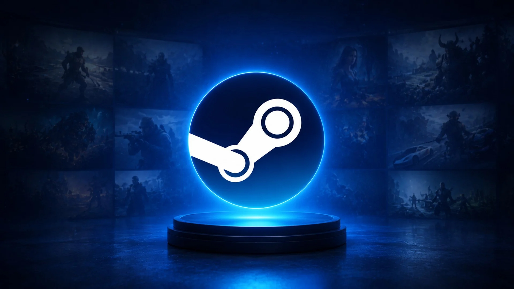
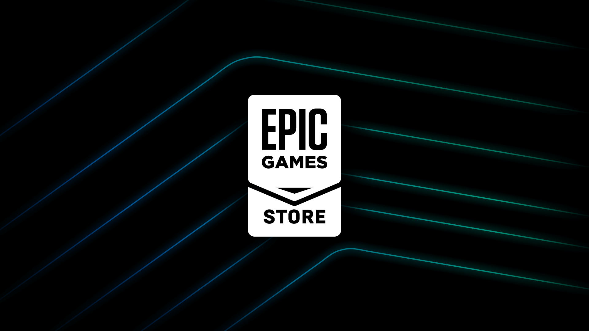
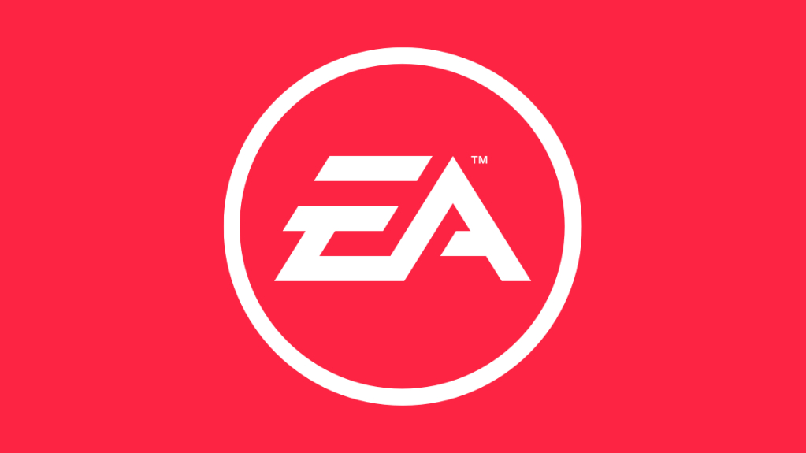

PC
Os computadores oferecem grande variedade de jogos, possibilidades de personalização e diferentes configurações de desempenho.
Os computadores oferecem grande variedade de jogos, possibilidades de personalização e diferentes configurações de desempenho.

Os consoles PlayStation oferecem jogos exclusivos, experiências imersivas e uma grande variedade de títulos.

A plataforma Xbox oferece diversos jogos, serviços de assinatura e recursos para jogar com amigos.

A Nintendo é conhecida por seus consoles versáteis e franquias populares de jogos.

Os dispositivos móveis oferecem acesso a uma ampla variedade de jogos, permitindo jogar em qualquer lugar e a qualquer hora.

A tecnologia de realidade virtual oferece experiências imersivas e novas formas de interação com os jogos.

A Steam é uma das maiores lojas digitais de jogos para PC, oferecendo uma enorme biblioteca de títulos, recursos sociais e promoções.

A Epic Games Store é uma loja digital que oferece jogos para PC, promoções frequentes e jogos gratuitos.

A EA app é a plataforma da Electronic Arts para PC, permitindo acessar jogos como The Sims 4, EA SPORTS FC e outros títulos da empresa.